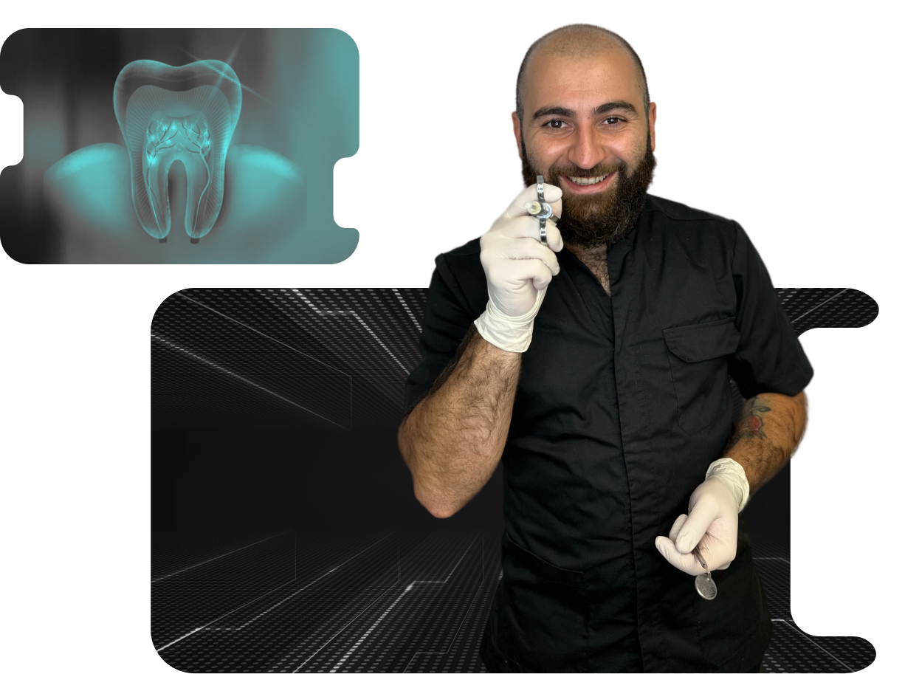
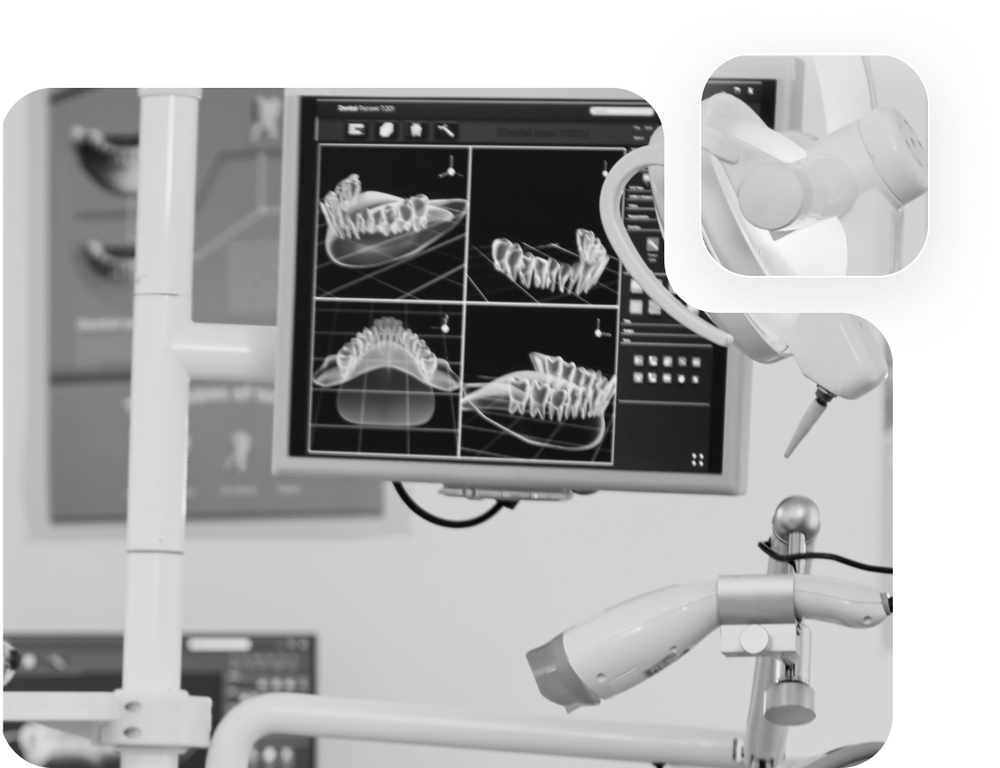

Пульпіт — швидке та якісне лікування у нас в стоматології
Пульпа — це орган, що складається з великої кількості нервових закінчень, кровоносних та
лімфатичних судин, що знаходиться в порожнині зуба. У народі його називають «нерв» Коли
мікроорганізми з каріозної порожнини інфікують «нерв», виникає захворювання під назвою «Пульпіт».
Причини виникнення
Зуб, уражений пульпітом, гостро реагує на всі подразники: холодне та гаряче, кисле та солодке,
повітря та воду. Крім цих факторів, зуб ниє вечорами та іноді пацієнти прокидаються вночі від
болю. У таких випадках стоматологи змушені провести процедуру видалення нерва з подальшим
пломбуванням кореневих каналів. Мета цієї процедури полягає у видаленні бактерій із зуба та
герметичного пломбування кореневих каналів, для того, щоб після бактерії з порожнини рота повторно
не інфікували зуб.

Деталі захворювання
Пульпіт необхідно лікувати як найшвидше, вартість даної процедури у нашій клініці від 1000 грн за
один кореневий канал. Кількість каналів залежить від зуба. У передніх зубах одним каналом, хоча у
нижніх часто зустрічається по два. У премолярах зазвичай два канали, але трапляються одно- і
триканальні премоляри. Моляри мають три-чотири канали, тому їхнє лікування складніше і займає
більше часу, ніж лікування інших зубів. Якщо при лікуванні пульпіту було пропущено один або кілька
кореневих каналів, то залишки тканин будуть відмінним будинком для бактерій, і надалі це призведе
до загострення періодонтиту.
Щоб бути впевненим, що ми визначили точну кількість каналів у зубі, рекомендується зробити
3D-діагностику — комп’ютерну томографію зубів. А так само, з метою збільшити якість
лікування, у нашій клініці дана процедура проводиться з використанням спеціального мікроскопа,
збільшення якого дозволяє розглянути навіть найтонші канали. Зуб, в якому видалений нерв, стає
більш крихким, ніж живий і ймовірність його сколу в рази вища, і для запобігання таким ситуаціям,
ми рекомендуємо зуби, в яких запломбовані канали, покривати штучними коронками.

Якщо ж вчасно не звернеться за допомогою, або звернеться, але до лікаря, який не є фахівцем у
даній сфері стоматології, який застосовує науково необґрунтовані методи лікування, то бактерії
можуть колонізуватися у кореневих каналах. Тоді запалення перейде в тканини, що оточують зуб.
Діагноз звучатиме «Періодонтит».
Зліва на знімку ми бачимо, як пломба тісно межує з нервом. Відповідно пацієнта
турбують болі, що говорить про те, що нерв запалений.
Знімок справа зроблено відразу після пломбування каналів. Ми бачимо щільну обтурацію
кореневих каналів у всій довжині, що мінімізує ризик інфікування стінок зуба.